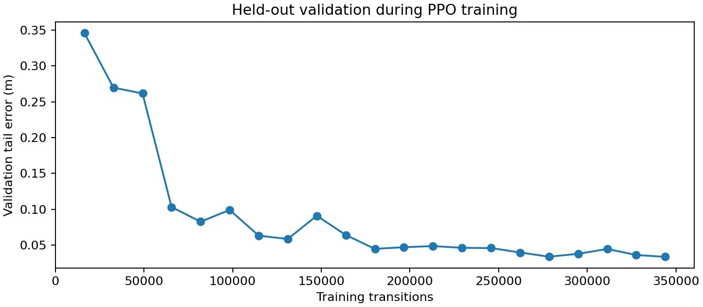
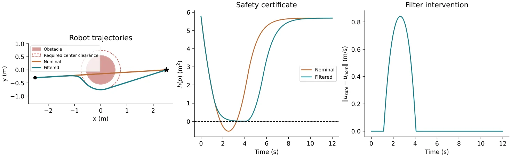
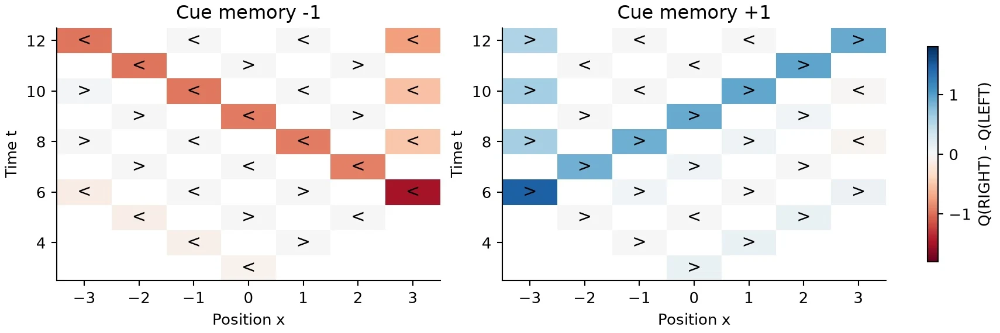
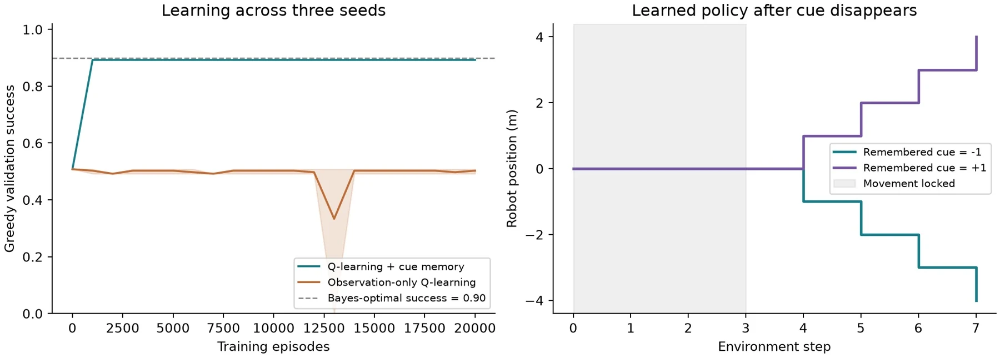
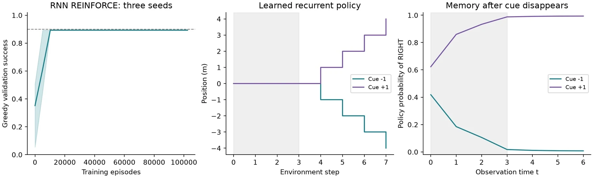

控制、记忆与约束Control. Memory. Constraints.
在仿真任务中探索 PPO 控制、CBF 安全过滤与部分可观测决策，分别观察目标达成、记忆和约束的作用。

01动作、约束和记忆，分别解决什么问题
CEG5306 的几组实验从不同角度研究决策：PPO 在动力学仿真中学习连续控制，控制屏障函数 CBF 对动作增加安全约束，部分可观测任务则检验策略是否需要记住已经消失的线索。它们是独立的课程实验，不是把所有组件都部署到同一个无人机系统。
| 实验 | 核心问题 | 实现 |
|---|---|---|
| 无人机 PPO | 连续动作怎样在动力学中得到反馈 | gym-pybullet-drones / PyBullet 与四电机转速控制 |
| 二维 CBF | 目标动作与避障约束冲突时怎样修正 | NumPy 中的半空间投影与轨迹检查 |
| 部分可观测决策 | 当前观察相同时，历史能否改变决策 | Q-learning 对照与循环策略 REINFORCE / BPTT |
02PPO：从电机动作到完整回合
无人机实验在已有 gym-pybullet-drones 平台上定义课程任务。策略输出四个电机的转速动作，通过仿真动力学影响位置和姿态；奖励与终止规则把目标误差、控制行为和失败条件转为训练信号。直接控制电机比指定一个目标位置更接近动力学接口，也更依赖稳定的训练和检查。


课程运行包含 30 万与 50 万步等训练预算，并在随机初始条件下安排每次 20 个评估回合。轨迹可视化用于检查“回报提高”是否对应真实的目标接近、稳定过程或终止行为，而不是只读取一个平均奖励。
03CBF：只在违反约束时修正动作
二维例子使用单积分器 ṗ=u，以圆形安全边界定义可行区域。名义控制指向目标，但可能穿过障碍；安全过滤器寻找距离名义动作最近、又满足屏障条件的速度。代码对这个单约束问题采用解析的欧氏投影，无需假称实现了通用优化求解器。
2pᵀu + κh(p) ≥ 0
u* = arg minᵤ ½‖u − uₙₒₘ‖²
R 为安全半径，h≥0 表示位于安全区域。约束激活时修正动作，否则保留名义控制。


保存结果中，安全半径为 0.75 m，过滤轨迹在完整保持输入区间上的最小距离约 0.75695 m，最终目标误差约 0.00037 m。检查包含每段轨迹内部的最近点，避免离散采样端点安全却在两点间穿入边界。
04部分可观测：线索消失之后还能做对吗
线索任务在早期给出目标提示，随后移除提示。策略到达相同位置、看到相同当前输入时，正确行动仍可能由之前的线索决定。仅按当前观察查表，会把需要不同决策的历史合并在一起；加入记忆可以保留这种差别。




实验对比显式记忆的 Q-learning、仅当前观察的基线与循环策略。循环网络使用 16 维 tanh 隐状态，以 REINFORCE 和 BPTT 训练；输入包含可见线索、位置和时间信息，没有把环境隐藏目标直接作为输入。
π(aₜ | o≤ₜ) = softmax(Wₒhₜ + bₒ)
循环状态将历史压缩为内部记忆；策略由当前观察和累积状态共同决定。
05用同一任务看差异，也保留比较边界


在保存的配对评估任务上，有记忆表格策略与循环策略均达到 90.18% 成功率，仅当前观察的基线约为 49.83%—50.17%。结果支持这个任务需要记忆，但不能据此判断循环网络在任意部分可观测问题上都更强。
表格策略与循环策略使用不同训练预算；相同评估任务的重复使用也不等于获得多组独立样本。因此，这一对照用于解释观察别名和记忆的作用，不用于宣称样本效率优势。
06把成功定义成可检查的条件
我的工作
完成课程任务代码、训练／数值实验、图表与结果核验，分析动力学、约束和记忆的作用。
协作与基础
使用已有仿真框架；实验与本科三维重建团队中的导航模块分别归属，不把组员成果归入此处。
这些实验让我更加重视评估条件：奖励曲线、到达误差、连续区间安全和成功率回答的是不同问题。只有先把指标对应的假设写清楚，模型对照才有意义。